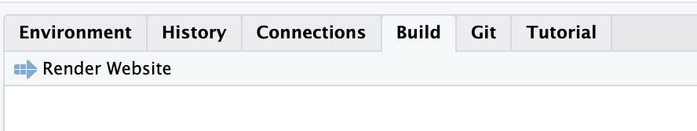
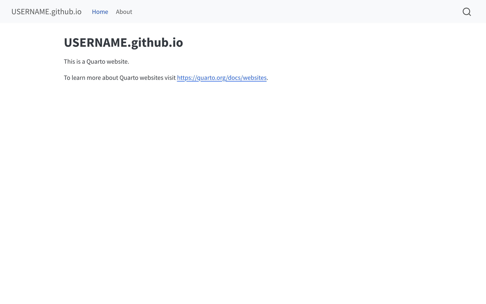
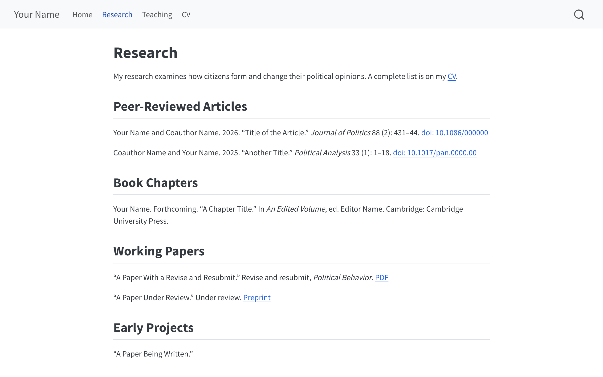
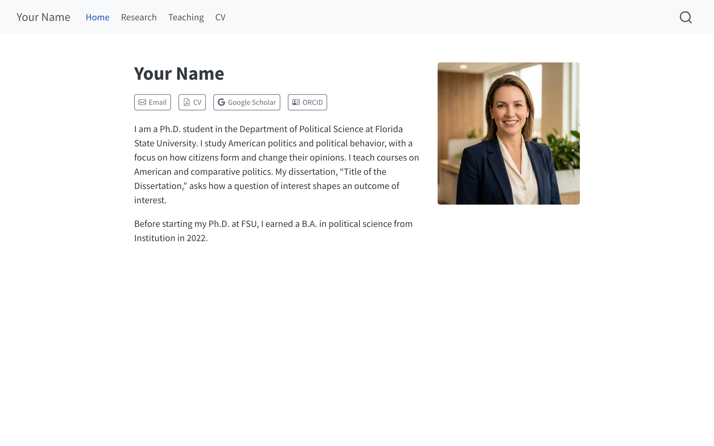
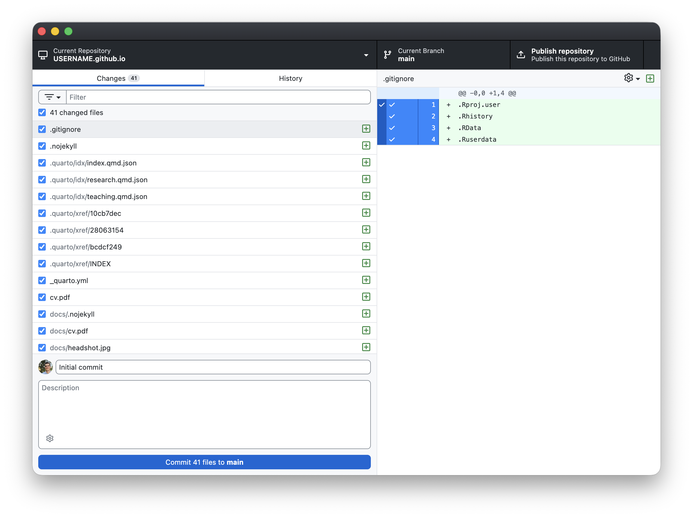
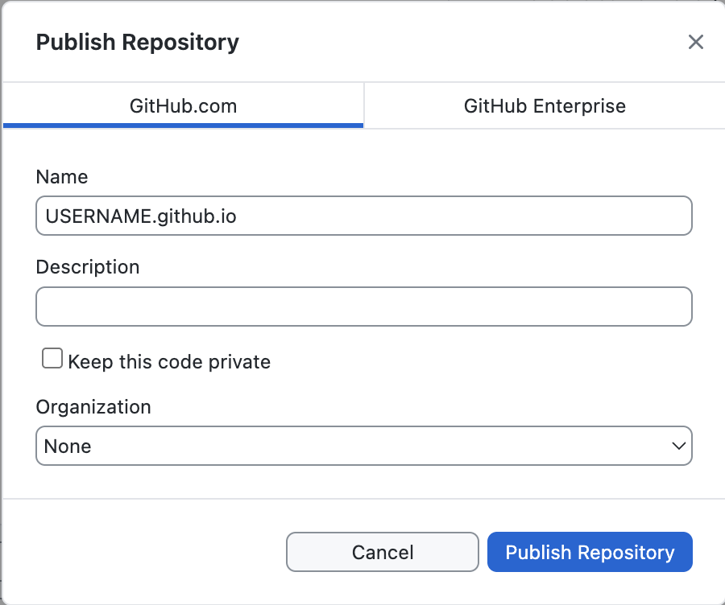
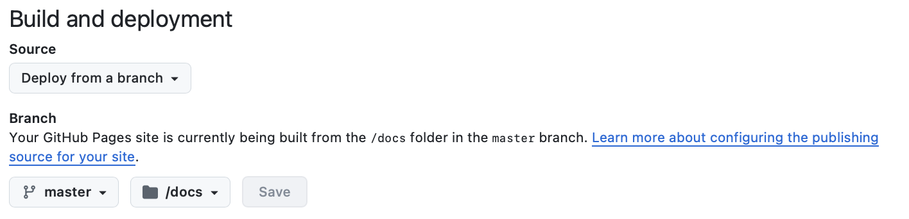

Quarto, RStudio, and GitHub Pages
(the content and design follow from there)
Follow this guide to build your first academic website:
Your website will be at https://USERNAME.github.io. There’s no payment required unless you want a custom domain name (see the extension at the end).
USERNAME is a placeholder for your own GitHub username. My USERNAME is carlislerainey, so my repository is called carlislerainey.github.io and my site is at https://carlislerainey.github.io. Put your USERNAME wherever you see the placeholder.
The home page you are about to build.
These three are pretty close to what you’ll have after you finish this guide:
jolla, the centered layout we start from. Source is on GitHub.trestles and one of Quarto’s dark themes. Source is on GitHub.solana and almost the same row of buttons you will make. Source is on GitHub.These two have a bit of customization.
trestles and restyled it to match her CV. Source is on GitHub.Four more sites show what a Quarto site can grow into.
Here’s what you should do before the workshop. Most of you should already have most of these.
docs/, which makes GitHub Pages simple.Done by 2:15.
In RStudio, click File → New Project… → New Directory → Quarto Website. Fill in the pane that follows.
USERNAME.github.io, all lowercase. This exact name puts your site at https://USERNAME.github.io. If you use any other name, your site will be at USERNAME.github.io/that-other-name/.Dropbox/, but git and Dropbox don’t always play nicely.Click Create Project. RStudio reopens with your new project loaded.
Done by 2:20.
Quarto has already added a working website. Before we change anything, look at what it added.
In the Files pane (bottom right) you will find four files:
| File | What it is |
|---|---|
_quarto.yml |
The settings for your whole site: title, navigation bar, theme. |
index.qmd |
Your home page. |
about.qmd |
A second page, included as an example. |
styles.css |
An empty file for custom styling. |
Render your website. Go to the Build tab (top right) and click Render Website. Your website will appear in the Viewer pane.

The Build tab’s Render Website button.
You will also see a new folder in the Files pane called _site. That’s where Quarto put the finished website. It’s the default spot; you will move it to a new location in the next section.

The site Quarto starts you with.
Done by 2:30.
Open _quarto.yml from the Files pane, select everything in it, delete it, and replace it with this:
The full block is in the guide, section 7.
We changed five things away from the Quarto default:
output-dir: docs sends the finished site to docs/ instead of _site/. GitHub Pages will serve a folder named docs (but not one called _site/).title: is your name.theme: cosmo replaces a two-item list. The brand entry it came with uses a _brand.yml file of custom colors and fonts, which you don’t have.toc: true is deleted, because a table of contents on a webpage is usually clutter.css: styles.css stays. The file is empty and we won’t add anything today. Your own CSS rules can go there later.
Warning
YAML is particular about spaces. The spaces create the indentation that gives the file its structure. Keep the spaces exactly as they appear above. Use spaces rather than tabs.
Delete the _site folder you made a moment ago. Check the box beside it in the Files pane and click Delete. We won’t need it again.
Done by 2:50.
Start by deleting the example page we don’t need. Check about.qmd in the Files pane, then click Delete.
Your home page. Open index.qmd, select everything, and replace it with Quarto syntax below. Put in your own name, bio, email address, Scholar URL, and ORCID iD:
The full block is in the guide, section 8.
If you don’t have a Google Scholar profile yet, delete its three lines. Google Scholar is only important once you accumulate citations.
- icon: google
text: Google Scholar
href: https://scholar.google.com/citations?user=XXXXXXXXXXXXTo add another button (e.g., GitHub, LinkedIn), copy the three-line pattern and pick an icon name.
Your research page. Click File → New File → Text File, paste the block below, then choose File → Save As… and name it exactly research.qmd:
The full block is in the guide, section 8.
Replace the placeholder material with your own.
Your teaching page. Click File → New File → Text File, paste the block below, then choose File → Save As… and name it exactly teaching.qmd:
The full block is in the guide, section 8.
Replace the placeholder material with your own.
The rendered research page looks like this, with the sample content in it:

The research page with the sample content.
Done by 2:55.
Your headshot and your CV are files rather than text. Find them in Finder (on a Mac) or File Explorer (on Windows). Right-click and copy these files (together or one at a time). In RStudio, go to the Files pane and choose More → Show Folder in New Window. You’ll see your project folder open in a new window, with _quarto.yml and your .qmd files already in it.
Paste both files in. Rename them exactly:
headshot.jpgcv.pdfAny PDF works the same way
A working paper, a syllabus, and conference slides would work the same way. Drop the file into the project folder, link it from any page (e.g., [PDF](smith-turnout-2026.pdf) on your research page), and render. Quarto copies every file your pages link to into docs/, so the link will work on the live site with no upload step.
Click into the Console at the bottom left and run:
It prints TRUE and creates an empty file.
Without this strange file, GitHub Pages will run your folder through a blog engine called Jekyll. We don’t want to do that because we’re rendering locally. The empty .nojekyll file turns that off. Quarto’s documentation recommends this.
Done by 3:00.
Go to Build → Render Website once more.
Then click the arrow at the top of the Viewer pane to open your site in a real browser. Before we publish it to GitHub, click through everything in the navigation bar:
Fix anything broken.
Done by 3:05.
Quarto has five layout templates that you can use for your homepage (i.e., index.qmd). You can change it with the template: option.
| Layout | Arrangement |
|---|---|
jolla |
Photo at the top, centered, with your name, bio, and buttons below it. |
trestles |
Photo and buttons in a left column, bio on the right. |
solana |
Name, buttons, and bio on the left, photo on the right. |
marquee |
One large image across the top, everything else stacked below. |
broadside |
Photo on the left, name, bio, and buttons on the right. |
index.qmd and change template: jolla to template: trestles. Save, then click Render Website. Look for the changes.template: solana next.jolla.
marquee uses a wide banner image, not a square headshot. Pictures of all five layouts are in the Quarto documentation.
Done by 3:10.
You can change the overall look of your site with the theme: option. Quarto has 25 themes you can choose from.
_quarto.yml and change theme: cosmo to theme: flatly. Save and render. Notice the change.sandstone, litera, and zephyr. All four are professional choices appropriate for an academic site, so pick whichever you like. You can see full-size previews of all 25 at bootswatch.com.sketchy and/or vapor. (Then change back to your favorite.)Done by 3:20.
Open GitHub Desktop.
USERNAME.github.io folder. Then click Add repository.Initial commit in the Summary box. Then click Commit to main. (Your button may say master instead; remember which one it says.)
The Changes tab before the first commit.
Important
Uncheck Keep this code private before you publish. With a free account, GitHub Pages only works for public repositories.

The Publish dialog, with the private box unchecked.
Click Publish repository. Your new repository will appear on github.com in a few seconds.
Live by 3:30.
On github.com, open your new repository and update the settings:
main (or to master if that is what your commit button said) and set the folder beside it to /docs. Click Save.https://USERNAME.github.io. GitHub documentation says this can take up to ten minutes.
The Pages settings, pointed at the docs folder.
To update your site:
.qmd file in RStudio. Save it.These updates will appear on your live site about two minutes later (but can take longer).
USERNAME.github.io is free and perfectly reasonable. A custom domain like johnasmith.com costs about $15 a year and looks a little more polished.
Choosing the name. Your name makes the best address.
johnasmith.com is the best.jasmith.com, johnsmith.io, and jsmith.co are good also.johnsmithfsupolitical.science is a poor choice.Try names in Domainr. It checks many related domain names at once and shows which ones are available. (But don’t buy it from Domainr.)
Buying it. Search for the name on Namecheap, add it to the cart, and check out. A .com domain name costs about $10 the first year and about $15 a year after that. Accept the free WHOIS protection; decline the other add-ons.
Connecting it.
| Type | Host | Value |
|---|---|---|
| A Record | @ |
185.199.108.153 |
| A Record | @ |
185.199.109.153 |
| A Record | @ |
185.199.110.153 |
| A Record | @ |
185.199.111.153 |
| CNAME Record | www |
USERNAME.github.io |
writeLines("johnasmith.com", "CNAME") (replace your own domain in the quotes). This creates a file named CNAME that has just the domain. Quarto copies it into docs/ on every render, which is how GitHub knows the domain belongs to this site. Render, commit, push.johnasmith.com into Custom domain, and click Save. GitHub checks your DNS records, which usually takes minutes but can take up to a day. When the check passes, check Enforce HTTPS. GitHub documentation says the box can take up to a day to become clickable. Once you check it, the certificate usually arrives within a few minutes. If it doesn’t, remove the custom domain, add it again, and click Save. (If GitHub Desktop offers Pull origin afterward, click it; GitHub sometimes adds a small commit of its own when you save the domain.)Your site is now live at the new address; the old USERNAME.github.io address keeps working as well.
carlislerainey.com/website-workshop